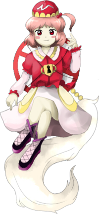

- Welcome to Touhou Wiki!
- Please register to edit. For assistance, check in with our Discord server or IRC channel.
Fan-made characters/Mitori Kawashiro
Mitori Kawashiro | |
|---|---|
|
Latest image of Mitori Kawashiro from Subterranean Hatred Crimson Grudge Hiding in the AbyssMore Character Titles | |
| Species | |
| Abilities |
Power to prohibit everything and anything |
| Occupation |
Collecting items(?) |
| Location |
Former Capital, formally the Human Village |
Music Themes | |
|
河童様の言う通り ～ One-way Accelerator (Subterranean Hatred) | |
Appearances | |
| Official Games | |
| |
| Other | |
| |
Mitori Kawashiro (河城 みとり Kawashiro Mitori) is a fan-made character created on 2ch by "Everyone from the Red Cucumber thread" (赤胡瓜スレのみんな Aka kyuuri sure no min'na). She is a half-human half-kappa who lives in the Underworld and is a half-sister to Nitori Kawashiro. It's unknown if ZUN's aware of this character.
General Information[edit]
She first appeared in the fangame Subterranean Hatred as the boss of what suppose to be the "Phantasm" stage of Subterranean Animism that happens after the Extra stage. Due to her history, she hates both humans and kappa and thus has kept herself away from society along with prohibiting her mind from anyone. However, she's no different from an ordinary kappa, except that she's in red. She processes prohibition signs (which Rinnosuke Morichika states that they mean "Do not enter") with images of prohibiting something tied to her back.[1]
The species of Kappa are originally engineers, but as Mitori was shunned by them, she is unskilled in handling machines, but sometimes she collects various different materials floating down the river above ground; Akyuu Hieda believes she actually wants to be acknowledged by humans. However, she will go to the extent of killing humans.[1]
Due to Mitori having a lock on her chest along with Nitori Kawashiro having a key on her chest, Marisa Kirisame wonders if these two match, where Akyuu goes to the extent of speculating that this is the way to open Mitori's mind. They both do in fact match[2], but of course officially the key on Nitori has unknown usage.
Ability[edit]
- Power to prohibit everything and anything
Mitori has the ability to prohibit everything and anything, which reflects her design. Since she lives underground, she doesn't face much difficulties, but nor does she have much fun. This is because she prohibits anything from entering her closed mind. Since she never allows a soul to approach, not even a fly is found near her. Because she was badly hurt by the humans and kappa from above ground, it's not easy to approach her – even Yuugi Hoshiguma finds it hard to go near her.
Her abilities have reached to the point where no living beings can linger around her, but if someone were to get too close to her, they'll have no choice but to run. Since she holds a deadly grudge against humans, it's said that running towards the direction of the Human Village wouldn't help. If you anger her and try to run away as fast as you could, she will prohibit your escape route, so the only way out would be pleading for mercy. Because of this vigourous danger, it's recommended not to go near caves.[1]
Character Basis[edit]
Origin[edit]
Various sources of the inspiration for Mitori could be pointed out, however these are guesses. First off, her design simply appears to be based of typical prohibition signs that are localised in Japan. Her species, name and the sign she wears on her back are likely to have being inspired from Nitori herself. Her half-human half-kappa hybrid could possibly be based from Rinnosuke Morichika. Her mind being lock may be likely to be based on Koishi Komeiji's closed mind.
Name[edit]
Her full name is Mitori Kawashiro (河城 みとり). Mitori (みとり) doesn't have an actual meaning and is intended to sound a lot like Nitori's. Like Nitori's surname, Kawashiro (河城) means "river castle".
Design[edit]
Mitori's design shows that she has chestnut hair with a small ponytail, red eyes, a ruby shirt with white sleeves, ruby frills and a white/golden collar. She has an odd red hat with gold scallop frills, along with a pearl-white skirt with two golden coloured-rings hanged around her waist. Pink and black ankle-highs with black laces with knee-high socks. She also has a red/white "No Entry" sign on her back with a golden lock strapped from the sign to her chest. The sign on her back is supposed to represent a kappa's shell, as well as her power to forbid anything. The art mimics ZUN's.
Backstory[edit]
Since humans and kappa are close friends, Mitori acts as the go-between connecting the two, in which Mitori's mother was hoping for. Thus, thoughts about humans and kappa being friends are outdated in today's world. Back in the day, Mitori lived with her human mother at the Human Village, but alienated by other humans and the mountain Kappa also ran away upon seeing her; this would be because Kappa don't want to be seen by humans alone
Since then nobody would want to be friends with her. No matter how much she tried, only pain remained in her heart. With a fragile young girl's mind, she wasn't able to understand why others were treating her as if she was useless. Her loneliness was in fact coming from the humans.
She thought she shouldn't exist in the human world and left for Hell instead. However, the hell that was in her imagination was no longer the place it was. In ancient hell, there were so many youkai, and there were even oni that were friendly to her in some way. However, Mitori wouldn't still open her mind. Unlike Koishi Komeiji's closed 3rd eye, she shut out everything that came into her mind. Especially Yuugi Hoshiguma, among the oni that accepted Youkai who were hated above ground, was worried about this, but there was absolutely no way to approach her.
Yuugi made a request to Satori Komeiji. Upon hearing the request, Satori felt that the appearance of a crimson kappa in hell was weird, so she decided to take a look at what's in her mind. Upon hearing this, the crimson kappa's mind became tumultuous. However, even amongst the unrest, the original Kappa's feelings were left, and Satori was able to see the friendly part of her. Satori thought she had seen all of the crimson kappa.
Satori was able to notice that this was something different from Koishi's case, but she was able to do nothing to Mitori. Mitori's mind that refused to get read was not something that one can open up easily. If you attempt to, she can just send you right back away. However, for Satori, who had other thoughts in her mind, decided to send away human beings that came from above ground to the Palace of Earth Spirits once in a while.
Story[edit]
| Attention: This section is a stub and it needs expanding with more information related to the section's topic. If you can add to it in any way, please do so. |
- Subterranean Hatred
- Main article: Subterranean Hatred Story
Relationships[edit]
Mitori is known to be Nitori Kawashiro's older-half sister and is slightly taller than Nitori.[1] On what kind of relationship they had is unknown.
Mitori also seems to know Yuugi and Suika rather well, but it's also unknown what kind of relation they have. Yuugi finds it a struggle to go near her.
- Unnamed parents
Both Mitori and Nitori have the same father, but not the same mother since Mitori's father is a Kappa and her mother is a Human. Mitori once lived with her human mum in the Human Village before running away due to the treatment by the humans.
Gallery[edit]
There are a number of versions of Mitori, drawn in different ways.
Spell Cards[edit]
<toggledisplay showtext="Show spell cards" hidetext="Hide spell cards">
| Name | Translated | Comments | Games | Stage | ||
|---|---|---|---|---|---|---|
| Total: 11 | ||||||
| 閉符「地底の隅に独り棒立ち」 | Closure Sign "Standing Alone in the Underground Corner of the Earth" | SA | St. Ph | Esoterica "Nine Syllable Stabs" (SA), Symbol "All Ancestors Standing Beside Your Bed" (SA) | ||
| 禁視「オプティカルブラインド」 | Prohibiting Vision "Optical Blind" | SA | St. Ph | Symbol "Danmaku Paranoia" (SA) | ||
| 非止「だるまさんがころばない」 | Non-stop "Daruma-san Won't Fall Down" | SA | St. Ph | Instinct "Release of the Id" (SA) | ||
| 禁生「生れ赤子は赤い顔」 | Forbidden Life "A Red-faced Baby is Born" | SA | St. Ph | |||
| 禁域「ノー・エントリー」 | Forbidden Area "No Entry" | SA | St. Ph | |||
| 禁恋「運命が招く悲劇」 | Forbidden Love "A Tragedy Lead by Fate" | SA | St. Ph | Subconscious "Rorschach in Danmaku" (SA) | ||
| 禁詩「緋蟲の報せ」 | Forbidden Poem "A Red Bug Told Me" | SA | St. Ph | Rekindled "The Embers of Love" (SA) | ||
| 流符「赤胡瓜の河流れ」 | Flow Sign "Stream of Red Cucumbers" | SA | St. Ph | Water Sign "Kappa's Pororoca" (MoF), Kappa "Monster Cucumber" (MoF) | ||
| 「忌避されし紅色の河童」 | "Hated Red Kappa" | SA | St. Ph | "Philosophy of a Hated Person" (SA) | ||
| 「サブタレイニアンキューカンバー」 | "Subterranean Cucumber" | SA | St. Ph | "Subterranean Sun" (SA), "Subterranean Rose" (SA) | ||
| 赤河童「禁止看板」 | Red Kappa "Prohibitory Signboard" | SA | St. Ph | |||
</toggledisplay>
Additional Information[edit]
- "Subterranean Animism Phantasm Stage (distribution version)" has been downloadable from Red Cucumber Field since December 25, 2010.
- A lot of her attacks and spell cards are very similar to Nitori's and Koishi's.
- The midboss sprite in earlier versions of Subterranean Hatred shows Mitori instead of Yuugi.
- Her spell cards Hated Red Kappa and Red Kappa "Prohibitory Signboard" have a warning screen similar to Utsuho's spell cards in Subterranean Animism and Touhou Hisoutensoku, but it shows a "ⓧ FORBID!! ⓧ" warning instead of "☢ CAUTION ☢".
- On the original Gumon image that's a Pseudo-Perfect Memento in Strict Sense article for Mitori, the footnote numbers appears to be mixed up. In order for the article and footnotes to make sense, footnote #2 should go to where footnote #3 is and vice versa.
- The official people who created Mitori has also created a Yukkuri version of Mitori called a Yukkuri Mitori.
- Mitori's theme name may have some reference to the character Accelerator from A Certain Magical Index, in which his name is written as Ippōtsuukou (一方通行), meaning "One-Way Road".
- There may be a possible reference to Mitori in Hopeless Masquerade as Nitori has a springy prohibition sign that springs out to hurt the opponent.
Fandom[edit]
Mitori has become a rather noticeable Touhou character amongst the fanbase despite being fan-made. Arguably, she is consider to be the most popular fan-made character in the Touhouverse. It's even an achievement to appear in other fan-made games and her theme to be arranged.
- Because Nitori's key and Mitori's lock fit together, it's speculated that Nitori could possibly nullify Mitori's powers.
- Mitori is often compared to other fan-made characters such as Sasha Sashiromiya, Rinbokusan Sasaki and Karen Yawata.
- She's one of the few fan-made characters to make an appearance in the unofficial patch of Touhoumon.
- It's common to treat Mitori as a simple prohibition sign in the fanbase for obvious reasons, similar to how Eiki Shiki is treated as a typical judge, where she may forbid other Touhou characters from passing by anything.
Official Profile[edit]
|  | ○ＰＨ面ボス 地に潜む紅い怨念 河城みとり（かわしろ みとり） 種族：人間と河童のハーフ 人間と河童は盟友である。 確かに、河童と人間は古来からの盟友であった。 はじめは、人間の母親に連れられて人間の里でしばし暮らしていた。 こちらからは手を差し伸ばせど、その手はいつも受け入れられない。
今回は、勇儀がさとりに頼んでみたことから始まる。
にも関わらず、さとり自身が何もしなかったのは何故か。
しかし、ちょいとばかり面白いことを考えたさとりは、自分からは動
幼少時代のように、本気で真っ向から向き合える。
|
Phantasm Stage boss Crimson grudge hiding in the abyss Mitori Kawashiro Species: Half-human, half-kappa Humans and Kappa are close friends. In fact, humans and kappa were close friends. At first, Mitori lived with her human mother in the human village for a while. Since then nobody would want to be friends with her.
This time, let's go back to where Yuugi made a request to Satori.
Aside from the story, what was it that Satori herself never got to do?
However, for Satori, who had other thoughts in her mind,
Just like a little girl, she directly faces you, Probably, that is good for her once in a while. |
| 地に潜む紅い怨念 | Scarlet Grudge that Sank Underground | |
| 河城 みとり Kawashiro Mitori | Mitori Kawashiro | |
| 能力： あらゆるものを禁止する程度の能力 | Ability: Power to prohibit everything and anything | |
| 危険度： 極高 | Threat level: Extremely High | |
| 人間友好度： 最悪 | Human friendship level: Worst | |
| 主な活動場所： 洞窟 | Main place of activity: Caves | |
| 地底奥地の洞窟でひっそりと暮らしている赤い河童。人間と妖怪のハーフであり、河城にとりとは腹違いの姉妹である(＊１)。 | A crimson kappa residing quietly in a deep cave underground. As a half-human and half-youkai, she is a half-sister(*1) to Nitori Kawashiro. | |
| ハーフということもあり友好関係のかみ合わないお互いの種族から忌み嫌われ疎まれていった結果、自ら地獄へと出向かいた。 | Although she is a half human half youkai, after being disliked by both sides, she left for the Burning Hell. | |
| 現在洞窟内の生活は苦は無いが楽もない。心を開くことのない彼女は心に立ち入る物、すべてを制限しているからだ。 | Living in a cave, she doesn't face much difficulties, but nor does she have much fun. This is because she prohibits anything from entering her closed mind. | |
| 彼女の能力はあらゆるものを禁止する能力で常に周りの生物を近くに奇ることを禁止しているから回りには羽虫すら奇ってこない(＊２)。 | Her ability is to prohibit anything from her. Since she never allows a soul to approach, not even a fly is found near her(*2). | |
| 彼女が地下に住むことなった際、地下で嫌われた妖怪達を率先して受け入れた鬼の中でも勇儀が特に心配していたのだが、心の傷は相当深くやはり上手く接することは出来なかったのである。 | Around the time when she started living underground, Even the Oni, especially Yuugi, who accepted the Youkai that were disliked above ground, were worried, but since Mitori was deeply hurt from her turmoil above ground, it was not easy to approach her. | |
| 背はにとりより若干高いくらいで外見は河童が赤いだけだが背中には何かを拒むイメージのある鉄の板(＊3)が縛り付けられている。 | She is slightly taller than Nitori, and her appearance is no different from an original Kappa except for the fact that she is dressed in red. She also appears to have steel signs(*3) with images of prohibiting something tied to her back. | |
| 河童はもともとエンジニアな種族なのだが彼女は憚られていたからか機械には弱いが時々地上で川に流れてるガラクタを収集しているらしい(＊4)。 | The species of Kappa are originally engineers, but as Mitori was shunned by them, she is unskilled in handling machines, but sometimes she is discovered collecting various different materials floating down the river above ground.(*4) | |
| 目撃報告例 | Eyewitness reports | |
| 洞穴の入口部近で赤い河童を見かけた。殺意を感じだので必死で逃げた（著名） | "I saw her near the entrance to a cave. She seemed to want to kill me, so I ran away as fast as I could." (anonymous) | |
| なぜ人間がそこにいくのか…。引きこもりも偶には気分転換も必要なのだろう。 | I have no idea why any human being would want to go there. Maybe Hikikomoris need fresh air once in a while. | |
| にとりの胸についてる鍵はみとりの胸の鍵穴と一致するのか気になるんだが。（霧雨魔理沙） | "I always wonder whether the key on Nitori's chest matches with the keyhole on Mitori's chest." (Marisa Kirisame) | |
| 私も気になる。心を開く鍵とかファンタジーな事を想像してみる。 | Sometimes I wonder too. I often think about whether Nitori's key is the key to opening up Mitori's mind. | |
| ・お姉ちゃんは元気かなぁ… （にとり河城） | "I wonder if my older sister is OK..." (Nitori Kawashiro) | |
| しぶとくも生きているから心配は無い。今度無理を承知で地底に会いに行ったらどうだろうか。 | She seems to be living fine in the caves so no worries. I wonder what would happen if you went to visit her? | |
| 対策 | Countermeasures | |
| 彼女の能力で周り生物は近寄らないようになっているが、もし万が一出くわした場合は逃げるしか他に手はない。 | Her abilities have reached to the point where no living beings can linger around her, but should you get too close to her you have no choice but to run. | |
| 彼女は人間に相当恨みを持ってるので、その場で逃げずにいたら間違いなくただじゃ済まない。喧嘩を売った後必死で逃げても逃げ道を禁止されたらもう命乞いしかないだろう。 | Since she holds a deadly grudge against humans, running towards the direction of the Human Village won't help. If you anger her and try to run away as fast as you could, she will prohibit your escape route, so the only way out would be pleading for mercy. | |
| まず洞窟には行かないようにすればよいだけだ。 | As for now, just make sure that you don't go into caves. | |
| ＊１ みとりは姉。 | 1: Mitori is the older sister. | |
| ＊２ 香霖堂店主曰く名前は『道路標？』で用途看板とさほど変わりないらしい。 | 2: I think Rinnosuke said that the meaning of the sign is "Do not enter". | |
| ＊３ 蚊取り線香としては絶大な能力である。 | 3: This ability even surpasses that of a mosquito-repelling incense. | |
| ＊４ まだ仲間として認めてもらいたいのだろうか。 | 4: Perhaps she still wants to be acknowledged by humans? | |
Official Sources[edit]
<toggledisplay showtext="Show sources" hidetext="Hide sources">
- Subterranean Hatred - (Phantasm) Boss
- "Red Cucumber Field (赤胡瓜畑)", the official file library for Mitori (Japanese)
- The official wiki for Mitori (Japanese)
</toggledisplay>